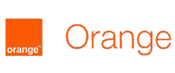

Bienvenue
à propos
ODC est une fondation dont le but est de renforcer l'empoyabilité des jeunes et de promouvoire l'innovation dans le domaine du numérique. Elle participe au developpement du numérique au Cameroun à travers des formations, l'accélération des start-up ainsi que l'accompagnement et l'investisement dans des projets porteurs.
 Nous partageons nos machines, nos outils, nos compétences, nos ressources et nos idées avec la communauté pour créer de nouvelles
opportunités d'avantages économiques et sociaux. WouriLab est également destiné au coworking: pour encourager l'émulation collective
et catalyser l'innovation et l'entrepreneuriat technologique.
Nous partageons nos machines, nos outils, nos compétences, nos ressources et nos idées avec la communauté pour créer de nouvelles
opportunités d'avantages économiques et sociaux. WouriLab est également destiné au coworking: pour encourager l'émulation collective
et catalyser l'innovation et l'entrepreneuriat technologique.
Les sevices de ODC
-
Orange Fab
C'est un programme qui cible les entrepreneurs et les aide à la maturation de leurs structure.
GO -
Ecole du code
Elle est dédiée à l'accompagnement des developpeurs, geeks et porteurs d'idées de projets.
GO -
Fablab
La formation dans le FabLab s'appuie sur des projets de prototypage avec des équipements numériques et l'apprentisage avec les pairs
GO -
Fab incubateur
Il accompagne les jeunes start-upeurs et les aide dans leurs idées de developpement.
GO